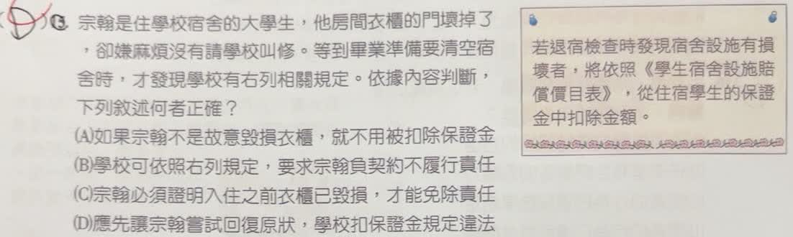

分享原卷｜第 15 題
完整原題
作答所需文章／材料
原題右列規定： 若退宿檢查時發現宿舍設施有損壞者，將依照《學生宿舍設施賠償價目表》，從住宿學生的保證金中扣除金額。先想一想，再查看答案、解說與原圖
逐項解析
| 選項與原句 | 判讀 | 句意與判斷理由 |
|---|---|---|
| (A) 如果宗翰不是故意毀損衣櫃，就不用被扣除保證金 | 不選 | 非故意不等於一定免責；若有應注意卻未注意的過失，仍可能產生責任。 |
| (B) 學校可依照右列規定，要求宗翰負契約不履行責任 | 不選 | 右列規定未交代具體契約義務、違約條款與損壞原因，僅依題目提供的材料，不能直接確認本項契約不履行責任。 |
| (C) 宗翰必須證明入住之前衣櫃已毀損，才能免除責任 | 應選 | 若能證明入住之前衣櫃已毀損，就能說明該損壞原已存在，不應由宗翰負擔本題所指的賠償；C最符合題意。 |
| (D) 應先讓宗翰嘗試回復原狀，學校扣保證金規定違法 | 不選 | 不能只因約定可從保證金扣除合理賠償，就直接斷言違法；也不能僅依這個選項認定有一律優先自行修復的權利。 |
詳細說明與解題步驟
一、依題目提供的內容判斷，答案選C
題目只給出退宿時發現設施損壞，將依價目表從保證金扣除賠償的規定。若宗翰能證明衣櫃在入住之前就已毀損，便能說明這項損壞原已存在，不應歸由他負擔，因此C符合本題的判斷依據。
二、為何不選B
右列規定只說明設施損壞時如何扣除保證金，沒有列出住宿契約的具體義務與違約條款，也沒有交代衣櫃的損壞原因。因此，僅依題目內容，不能直接確認B所說的「契約不履行責任」。不選B是因為材料不足以支持它，不是宣稱所有住宿爭議都不可能成立契約責任。
三、其他選項
A把沒有故意當成一定免責，忽略過失等可能性，說法過度絕對。
D沒有足夠依據就斷言學校扣保證金規定違法，也不能由右列規定推出學校一定要先給宗翰自行修復的機會。
四、本題的閱讀重點
「依據內容判斷」時，應選材料能支持的敘述，不能為B補入題目未交代的契約條款。C提供入住前已損壞的證明，能直接釐清這項扣款責任，故仍選C。
這是依本題所給情境作答，不把C延伸成所有實際住宿爭議唯一的免責方式；個案仍可能涉及正常耗損、歸責原因等其他事實。
延伸核對：民法第432條對保管義務及依約正常使用耗損的區分。
https://law.moj.gov.tw/LawClass/LawSingle.aspx?pcode=B0000001&flno=432
核對註記：依使用者確認，本題按右列規定及題幹提供的內容判斷，B缺少足夠依據，C最符合題意。保留原題與選項。
原圖（僅本題）
